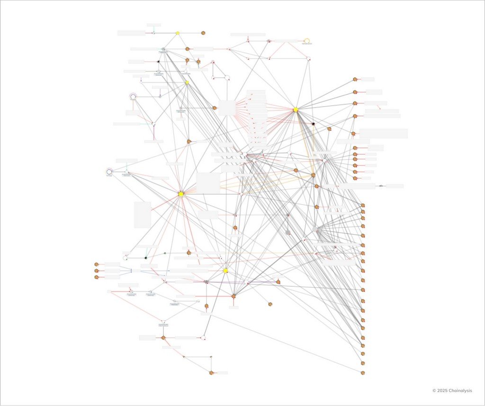

체이널리시스 솔루션으로 국제 해킹 조직을 검거한 서울경찰청
"가상자산은 범죄자들의 안전지대가 될 수 없습니다. 해외로 도피해도 언젠가는 반드시 잡힙니다."
- 김재현 경감, 서울경찰청 인터폴공조계
서울경찰청이 최근 들어 가장 정교한 사이버 범죄 조직 중 하나를 검거했습니다. 2년에 걸친 수사 끝에 기업 임원, 고액 자산가 등 258명으로부터 약 390억 원(미화 약 3천만 달러)을 빼돌린 국제 해킹 조직의 실체가 드러났습니다. 이 조직은 노련한 수사관들조차 놀랄 만큼 대담하고 치밀한 수법을 사용했지만, 가상자산을 통한 흔적 은폐 시도는 서울경찰청이 활용한 최첨단 블록체인 인텔리전스 도구 앞에서 무력화되었습니다.
사건 개요: 대담한 국제 해킹 조직
2023년 9월, 서울경찰청 사이버수사대는 한 국내 기업 회장으로부터 계좌 무단 접근 신고를 접수했습니다. 처음엔 단순한 사건처럼 보였지만, 같은 해 12월까지 유사 사건이 이어지며 피해자 명의로 무단 개통된 휴대폰이 계좌 탈취에 사용된 사실이 드러났습니다.
수사 결과, 이 범죄 조직은 피해자 개인정보를 해킹해 돈을 빼돌린 뒤, 기관 직원을 사칭해 가족에게까지 접근하며 추가 범행을 준비하고 있었습니다. 김경환 서울경찰청 사이버범죄수사대 팀장은 "상상조차 못한 수법이었다"고 밝혔습니다.
체이널리시스를 통한 자금 추적
범죄자들은 훔친 돈을 가상자산으로 바꿔 수사를 어렵게 만들려 했습니다. 하지만 이 지점에서 체이널리시스 블록체인 데이터 플랫폼이 위력을 발휘했습니다. 서울경찰청은 체이널리시스 Reactor를 활용해 복잡한 거래 구조를 풀어냈습니다. 이를 통해 범죄 자금 흐름을 시각화하고 추적하면서, 보이지 않던 연결고리까지 밝혀낼 수 있었습니다.
특히 이번 사건을 다룬 기사에서 Reactor 그래프가 직접 언급되며, 체이널리시스 기술이 범죄 조직의 자금 흐름을 파악하는 데 얼마나 중요한 역할을 했는지 입증되었습니다. 조직은 모든 자금을 가상자산으로 바꿔 추적을 피하려 했지만, 블록체인의 투명성과 고도화된 분석 도구 앞에서는 무용지물이었습니다.
인터폴 공조를 통한 총책 검거
수사는 곧 한국을 넘어 국제 공조로 확대되었습니다. 중국과 태국에 거주하던 총책 A씨를 추적하기 위해 인터폴과 협력했고, 골프장 출입 기록, 호텔 숙박 내역 등을 분석한 끝에 태국에서 A씨를 검거했습니다. 이후 106일 만에 한국으로 송환되었습니다.
블록체인 인텔리전스: 현대 수사의 필수 도구
이번 사건은 체이널리시스 솔루션이 왜 현대 금융 범죄 수사에 없어서는 안 될 핵심 도구인지 잘 보여줍니다.
- 흔적 없는 자금 추적: 범죄자들이 가상자산으로 흔적을 감추려 해도, 체이널리시스는 돈의 흐름을 끝까지 추적할 수 있습니다.
- 복잡한 네트워크 시각화: Reactor는 거래·주소·주체 간 관계를 한눈에 볼 수 있게 해 범죄 조직의 구조를 드러냅니다.
- 자산 회수 가능: 탈취된 390억 원 중 140억 원을 회수했습니다. 불법 자금 몰수는 범죄 조직의 자금줄을 끊고 재범을 막는 데 결정적입니다.
진화하는 암호화폐 범죄와 수사
전 세계적으로 가상자산 사용이 늘면서 범죄 수법도 계속 진화하고 있습니다. 이번 사건은 전통적인 금융 범죄에 가상자산이 결합해 수사가 훨씬 복잡해진 사례입니다. 하지만 블록체인 분석 기술 역시 빠르게 발전하고 있습니다. 체이널리시스는 수사기관과 기업들이 새로운 위협보다 앞서 나갈 수 있도록 솔루션을 꾸준히 고도화하고 있습니다.
결론: 가상자산은 더 이상 범죄자의 안전지대가 아니다
서울경찰청을 비롯한 전 세계 수사기관과의 협력을 통해, 체이널리시스는 투명성이 불법 활동을 압도하는 안전한 가상자산 생태계를 만들어가는 데 일조하고 있습니다. 이번 사건의 성과는 분명한 메시지를 던지고 있습니다. 블록체인 분석은 금융 범죄 수사를 혁신하고 있으며, 가상자산은 더 이상 범죄자에게 안전한 공간이 아니다라는 점이 바로 그것입니다.